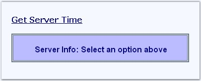
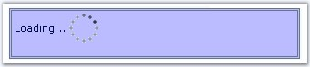
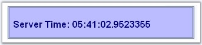

In this section, we will illustrate how the contents of a label can be updated via callback on button click without reloading the entire page.
The following figure shows a page with a hyperlink, that when clicked will refresh the label contained inside a callbackpanel with the server's current time information.

Figure 160
1. In design view, add a CallbackPanel control to the application and a label control inside the callback panel.
5. The EnableCallbacks property must be enabled. By default the value is set to True. Only when this property is enabled, callback will be invoked.
6. ASP.NET hyperlink control is configured in HTML view. The getServerDateTime(param) function invokes the callbackpanel object's callback method, which ( _sfCallbackPanel1.callback(param) ) in turn will trigger the callback mechanism in server side that will retrieve the data.
|
[javascript]
<script type="text/javascript"> function getServerDateTime(param) { _sfCallbackPanel1.callback(param); } </script> |
|
[aspx]
<asp:HyperLink ID="HyperLink3" runat="server" NavigateUrl="javascript:getServerDateTime('time');"> Get Server Time </asp:HyperLink> <ssw:callbackpanel id="CallbackPanel1" runat="server" OnCallbackRefresh="CallbackPanel1_CallbackRefresh" ShowLoadingIndicatorOnCallback="true"> <asp:Label ID="ServerDataLabel" runat="server"></asp:Label> </ssw:callbackpanel> |

Figure 161
While the data is being fetched, the callback panel goes into 'Wait State'.
7. Create a routine to handle the CallbackRefresh event. Here, the handler returns a CancellableCallbackEventArgs object, which includes a parameter value that carries the string that you had passed in the earlier java script function (param). The Refresh handler for the callback panel on the server will update label control with a new server date / time.
|
[C#]
protected void CallbackPanel1_CallbackRefresh(object sender, Syncfusion.Web.UI.WebControls.CancellableCallbackEventArgs e) { if(e.CallbackArgument) =="time" this.ServerDataLabel.Text = "Server Time: "+ DateTime.Now.TimeOfDay.ToString(); } |
|
[VB]
Protected Sub CallbackPanel1_CallbackRefresh(ByVal sender As Object, Syncfusion.Web.UI.WebControls. ByVal e As CancellableCallbackEventArgs) If e.CallbackArgument ="time" Me ServerDataLabel.Text = "Server Time: " & DateTime.Now.TimeOfDay.ToString() Then End If |
Callback will return and show the refreshed callback content.

Figure 162
8. The callback can be changed to postback while refreshing the data by setting the RefreshPostbacks property to True and disabling the RefreshCallbacks property.